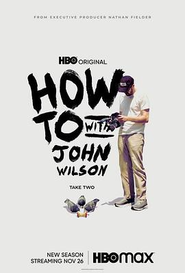

约翰·威尔逊的十万个怎么做 第二季 / How to with John Wilson Season 2
又名：约翰·威尔逊的生活指南
没想到房东竟然是隐藏线，一开始想surprise没有看到房东还扫兴了一下，不过结局还是看到了，暖心。 //房东搬走了，John把她的房子买下来了，好大的commitment啊 :O 希望这个系列能一直做下去
作品信息
| 导演 | 约翰·威尔逊 |
| 编剧 | 约翰·威尔逊 / 迈克尔·科曼 / Alice Gregory / 苏珊·奥尔琳 / 康纳·欧麦利 |
| 主演 | 约翰·威尔逊 |
| 类型 | 喜剧 / 纪录片 |
| 制片国家/地区 | 美国 |
| 语言 | 英语 |
| 首播 | 2021-11-26(美国) |
| 季数 | 2 |
| 集数 | 6 |
| 单集片长 | 30分钟 |
| IMDb | tt15437992 |
说过什么
2023-09-16 16:55:35
看过 · 时间来自广播，短评来自标记页
没想到房东竟然是隐藏线，一开始想surprise没有看到房东还扫兴了一下，不过结局还是看到了，暖心。 //房东搬走了，John把她的房子买下来了，好大的commitment啊 :O 希望这个系列能一直做下去
2023-09-10 15:07:35
广播 · 在看
2023-09-06 18:49:46
广播 · 想看
最后一次看到是 2026-08-01T11:04:44+10:00 · 豆瓣原页